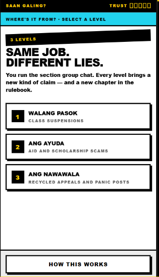
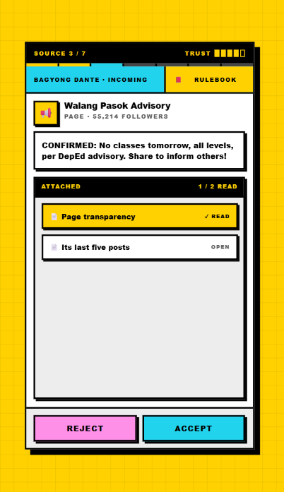
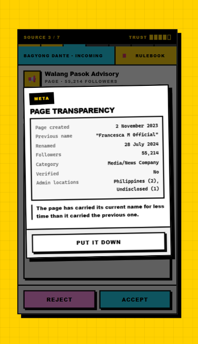

"Where's it from?"
A game about the decision that actually spreads misinformation: whether to pass it on.
You run your section's group chat. Forty-two classmates read what you post. Sources reach you carrying real documents — page transparency records, official memoranda, reverse image searches — and reading them is free and unlimited, checked against a rulebook. The score counts both ways. Letting a lie through costs your classmates. So does holding back something true, because refusing to believe anything is its own failure, and it is the one media literacy education produces by accident.
The full prototype: three levels, nineteen sources, thirty-two documents, the rulebook and the scoring.
It is a single HTML file with no dependencies and no backend. It runs offline in any mobile browser and has been built and installed as a 4 MB Android application on a physical handset.
Each level carries its own rulebook chapter, so levels work as curriculum units rather than extra content.
Fake class suspension announcements. Teaches who is actually authorised to declare one, and what a genuine advisory contains.
Cash aid and scholarship scams. Teaches official domains, forged memoranda, and the processing fee that gives it away.
Recycled appeals and panic posts. Teaches reverse image search — where a photo came from, and when.



Computer Science students, Angeles City, Pampanga.
| Name | Age | Role |
|---|---|---|
| Jose Gian Tubera | 21 | Team lead — game design, scenario research, rulebook and document writing |
| Allein Edward Miranda | 21 | Front-end — interface, design system, mobile layout |
| Rastafari Khaliel Sarzona | 21 | Back-end — game state architecture, level data, Android build |